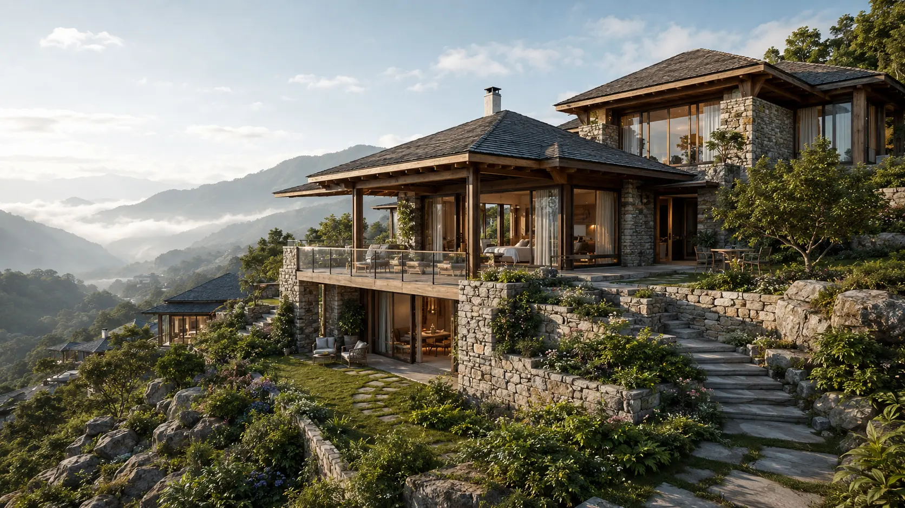

A senior living community is judged every day by people who walk a little slower, see a little less in poor light and may need help quickly. The master plan decides whether daily life there feels easy or tiring, long before anyone chooses a tile or a sofa.
India is ageing, and more developers and landowners are looking at senior living as a separate product. It is a different brief from an ordinary housing society. Residents spend most of their day inside the campus, so distances, slopes, lighting, dining, health care and the staff who provide services all become part of the design problem.
This guide explains senior living community master planning in India, from the market and site selection to layout, universal design, health care, services, phasing and rules. A note on our position: Innov has not yet built a senior living community. The principles below come from our township and hospitality work, including concept master plans for a villa township in New Chandigarh and a hill resort community in Mukteshwar, and from how hotels are run.
Why Senior Living Is Growing in India
A September 2026 report from JLL and the Association of Senior Living India projects India's 60+ population at 191.5 million by 2030 and 346 million by 2050. It counts about 25,050 organised senior living units as of June 2026, a penetration of 1.5%, against 6–7% in the US and 14–15% in New Zealand. Assisted care makes up under 10% of current stock.
Business Today, citing the India Ageing Report 2023, puts seniors at 10% of the population in 2023, rising to 20% by 2050. Smaller families, children working in other cities or abroad, and retirees with savings all push demand.
Buyers and their children visit, walk the campus and ask what happens at 2 a.m. when someone falls. The master plan has to answer that on the ground.
Types of Senior Living Community
Decide the level of care first. Each type needs different buildings, staff and approvals.
| Type | Who it serves | What the plan must provide |
|---|---|---|
| Independent living | Active seniors who manage daily life on their own | Accessible homes, clubhouse, dining, wellness, security, a medical room and quick ambulance access |
| Assisted living | Seniors who need help with bathing, dressing, medication or meals | Care rooms near nursing stations, staff on call, larger shared dining and lounges |
| Memory care | People living with dementia | Small secure households, looped walking paths, enclosed gardens, calm and familiar spaces |
| Continuing care | Residents who want to stay as their needs change | All of the above on one campus, so residents can move between levels without leaving |
Most Indian projects today are independent living with some care support. Reserving land for a care block from day one keeps the option open, because residents age in place and a community that cannot care for them later loses them. The same service-led thinking drives branded residences.
Choosing the Right Site
- Hospital access. A good multi-speciality hospital within a short, reliable drive. Drive the route at peak hours before you buy.
- Connection to the city. One developer quoted by Business Today calls the ideal location "connected rather than central": close to hospitals, the city and the airport, with enough greenery to live well. Family must be able to visit easily.
- Calm surroundings. Quiet roads, clean air and greenery, away from highways and industry.
- Gentle land. Flat or gently sloping land is far easier to make accessible. Every level change costs money and adds risk.
- Reliable utilities. Steady water and power, since lifts and medical equipment depend on them.
- Clear title and land use. Group housing permitted, or a clear path to change of land use.
The usual large land parcel planning questions apply too: access, zoning, slope, drainage and what the land can legally carry.
Planning a Walkable, Compact Layout
The most important idea in a senior living master plan is short, easy distances. A resident who can walk to dinner, the clinic and a friend's home without effort stays active and social. One who faces a long, sloping walk stays indoors.
Keep the campus compact
Group homes tightly around shared spaces. Put the remaining land into gardens and walking loops at the edges, where it adds to daily life without adding distance.
Level paths and gentle gradients
Keep pedestrian paths as level as the land allows, with gentle ramps where height changes and no sudden steps. Use firm, even, non-slip surfaces. Loose gravel and polished outdoor stone are trip and slip hazards.
Covered walks and rest points
Covered walkways between homes, the clubhouse and the health centre earn their cost in Indian summers and monsoons. Shaded benches with backrests and armrests at regular points let residents stop and rest.
Separate cars from people
Keep vehicles at the edge, with drop-off points close to each building. Crossings should be few, raised and well lit.
Make it easy to find the way
Simple loops, clear landmarks, distinct building colours and large signs help residents with failing memory or sight. Avoid long identical blocks and dead ends.

The Community Core: Clubhouse, Dining and Health
The heart of a senior community is the clubhouse, dining room and health centre, placed together at the centre of the plan. Every home should reach it by a short, level, covered walk.
- Dining. A main dining room, a café and a private room for family visits. Shared meals reduce isolation.
- Health centre. A clinic, nursing station, physiotherapy room and pharmacy counter, with direct ambulance access at the side or back.
- Wellness. A gym with senior-friendly equipment, a yoga studio and, where budget allows, a warm-water pool with steps and handrails.
- Activity spaces. A library, hobby rooms, a multipurpose hall, a prayer or meditation room and a small shop.
- Gardens. A central garden visible from the clubhouse, with shaded seating, a walking loop and raised planters.
This is close to how we plan clubhouses in townships and resorts. In the New Chandigarh concept, a resort-style clubhouse sits on a landscaped lake that forms the spine of the township. In the Mukteshwar concept, the resort clubhouse sits at the highest point of the ridge, and the plan includes serviced studio residences alongside the villas. For seniors, we would keep one strong shared centre but bring it closer to every home and keep the ground level.

Gardens that invite a daily walk help both health and mood. Our guide to landscape master planning for resorts covers water, shade and planting across a campus.
Universal Design and Accessibility
Accessibility should shape every path, door and room from the start. The main Indian reference is the Harmonised Guidelines and Standards for Universal Accessibility in India, 2021, issued by the Ministry of Housing and Urban Affairs. It revised the 2016 version and moved from minimum compliance for persons with disabilities and the elderly to universal design for everyone. Read it with the National Building Code and local bye-laws.
- Step-free entries. Every building and home reached without steps, with gentle ramps and handrails on both sides.
- Wide doors and corridors. Room for a wheelchair or walker to pass and turn, with lever handles.
- Lifts. In every building above ground level, with audio and visual signals.
- Grab bars and handrails. Beside toilets and showers, along corridors and on both sides of stairs.
- Non-slip floors. Matt, slip-resistant surfaces with no thresholds, especially in bathrooms and on paths.
- Good lighting. Even, glare-free light and night lights from bed to bathroom. Ageing eyes need more light and less glare.
- Contrast. Colour contrast at step edges, door frames and between floors and walls.
- Reachable fittings. Switches, sockets and shelves at heights a seated person can use.
Nobody wants to live somewhere that feels like a hospital, so build accessibility quietly into warm, homely interiors.
Designing the Homes
Senior homes are usually smaller than family apartments, because residents want less to clean. The model guidelines for retirement homes issued by the housing ministry in March 2019 indicate dwelling units of 30 to 60 sq m.
- Single-level living. Everything on one floor, with no internal steps.
- Bathrooms. Step-free showers with a seat, grab bars, non-slip floors and doors that open outward or slide, so a fallen person can be reached.
- Kitchens. Compact, with easy-reach storage and gas leak detection.
- Bedrooms. Space on both sides of the bed and a lit, clear path to the bathroom.
- Light and air. Large windows, cross-ventilation and a sit-out with a view of greenery or activity.
- Emergency call points. Alarm buttons in the bedroom, bathroom and living area, linked to a central desk.
- Room to adapt. Wall backing for future grab bars and space for a hospital bed and a carer.
Low-rise blocks or ground-level cottages suit independent living well. Where land is costly, mid-rise blocks can work if lifts are good and every floor connects easily to the core.

Healthcare and Emergency Access
Health support is a main reason families choose a senior community. Business Today reports that at one established Indian operator, 25–30% of residents use health care services and about 10% use assisted living or caregiving support.
- Medical room on site. The 2019 model guidelines indicate a 15 sq m medical emergency room for every 25 units, a 24x7 ambulance and tie-ups with nearby hospitals.
- Ambulance route. A direct road from the gate to every building, with turning space and a covered drop-off near the lifts.
- A central response desk. One staffed point that receives every emergency call and sends help.
- Room for more care. Land or floors reserved for a care wing as residents age.
Services, Staff and Back-of-House
A senior community runs more like a hotel than a housing society. Meals are cooked every day, homes are cleaned, laundry is collected and staff are on call around the clock. Our hospitality background helps most here. A good hotel plan is built around service that guests never see.
- Central kitchen. Sized for daily dining, with routes to deliver meals to homes.
- Laundry and housekeeping. Central stores and service lifts that keep trolleys away from residents.
- Service gate. A separate entry for deliveries, waste and staff.
- Staff spaces. Changing rooms, a canteen, rest areas and, for round-the-clock care, staff housing on or near the site.
Our guide to hotel master planning explains how back-of-house areas are sized and zoned. Plan service routes first, so staff can work without crossing residents' spaces.
Safety and Security
- Controlled entry. One main gate with a staffed post and visitor registration.
- Fire safety. Detection, sprinklers where required, and escape routes planned for people who move slowly or use wheelchairs.
- Power backup. For lifts, corridors, emergency lights, medical equipment and homes.
- Secure gardens for memory care. Enclosed gardens with looped paths, so residents with dementia can walk freely and safely.
Scale and Phasing
In the Business Today report, one operator says communities below 150–200 homes do not work operationally and puts the optimal size at 250–400 homes, adding that above 400–500 homes, smaller clusters help keep the feel intimate. Treat this as one operator's view and test it in a feasibility study for your site.
- Phase one. The core, main roads and services, the first cluster of homes and a finished garden. Early residents should move into a community that already works.
- Phase two. More clusters around the core, with paths and gardens finished as each opens.
- Phase three. The care wing, extra amenities and final clusters, once demand is proven.
Size roads, drainage, power and water for the full build-out in phase one, and keep construction traffic on a separate route. Our guide on how to plan a township in India covers phasing and infrastructure for larger sites.

Regulations and Approvals
- RERA registration. Under the 2019 model guidelines, retirement home apartments can be sold only after registration with the state real estate regulator.
- Model guidelines for retirement homes, 2019. A template for states. They call for alignment with the National Building Code, model building bye-laws and barrier-free standards, plus ramps, accessible lifts, anti-skid tiles, power backup and a tripartite agreement between developer, service provider and buyer. They indicate minimum group housing plots of 1,500 sq m in hilly areas and 3,000 sq m in the plains.
- State rules. In February 2024, LiveLaw reported that MahaRERA released draft rules for retirement homes covering design, lifts and ramps, bathrooms, lighting, alarms, power backup and security.
- Usual approvals. Land use, building plans, fire, environmental clearance for larger projects and any licences for nursing care.
Rules vary by state and change, so confirm the current position with your local authority and legal advisers. Our guide to the township approval process explains the wider sequence for large residential sites.
Common Mistakes to Avoid
- Normal housing with a label. A ramp and a clinic added to a standard project do not make it senior living. Buyers notice.
- A campus spread too thin. Long walks to dining keep residents at home and empty the shared spaces.
- Decorative steps. A pretty level change in a garden becomes a daily barrier for someone with a walker.
- No service side. Without space for kitchen, laundry and staff, trolleys end up in lobbies.
- No room to add care. Residents' needs grow, and they leave if care is not available.
- Building the core last. Early residents without dining or a clinic will tell everyone.
- Hospital-like interiors. Shiny floors, harsh lights and long corridors feel institutional.
- Bringing in the operator late. How the community will be run should shape the plan from the start.
How We Would Approach a Senior Community
Innov has not yet designed a completed senior living community. What we bring is township master planning and hospitality design. Our New Chandigarh concept plans 15 acres of villas around a central landscaped lake and a resort-style clubhouse, with loop roads off a tree-lined boulevard. Our Mukteshwar concept places 45 villas along an 11-acre ridge, with serviced studio residences and a resort clubhouse. Both share the structure a senior community needs: a strong shared centre, homes arranged around it and landscape that draws people outdoors.
From hotel and resort work, we bring the habit of planning service first. We would start with the site, the care model and the operator, test walking distances and gradients on the plan, and only then design buildings. Our township master plan design ideas show more of how we think about shared space at this scale.
Frequently Asked Questions
What is senior living community master planning?
It is the overall plan for a campus where older adults live, covering where homes, the clubhouse, dining, health care, gardens, roads, services and staff areas go, and how people move between them. The aim is short, level, safe distances, a strong community centre and room to add care as residents age.
How much land is needed for a senior living community in India?
It depends on the number of homes, density and level of care. The 2019 model guidelines for retirement homes indicate minimum group housing plots of 1,500 sq m in hilly areas and 3,000 sq m in the plains, but a full community with a clubhouse, gardens and care wing needs much more. A feasibility study for your site gives the real figure.
What is the difference between independent and assisted living?
Independent living is for seniors who manage daily life on their own and want services, company and security. Assisted living adds help with personal care such as bathing, dressing, medication and meals, which needs care rooms, nursing stations and more staff. Many communities plan for both on one campus.
Do senior living projects in India need RERA registration?
Yes, for homes sold to buyers. The 2019 model guidelines say retirement home apartments can be sold only after registration under the state real estate regulator. Some states, such as Maharashtra, have proposed further rules for retirement homes, so check the current position in your state.
What accessibility features should a senior community have?
Step-free entries, gentle ramps with handrails, wide doors and corridors, lifts with audio and visual signals, grab bars in bathrooms, non-slip floors, bright glare-free lighting, colour contrast at edges, emergency call points, and switches and storage at reachable heights. India's Harmonised Guidelines for universal accessibility, 2021, are the main reference.
Planning for the Way People Age
A good senior community feels like a well-run resort that residents rarely need to leave: homes close to a lively centre, level paths through gardens, food and care on hand, and staff who arrive when needed. That only happens when the master plan puts distance, gradient, service and care at the start of the design.
If you have land and are considering senior living, talk to our studio about testing the site and shaping a plan around the people who will live there.